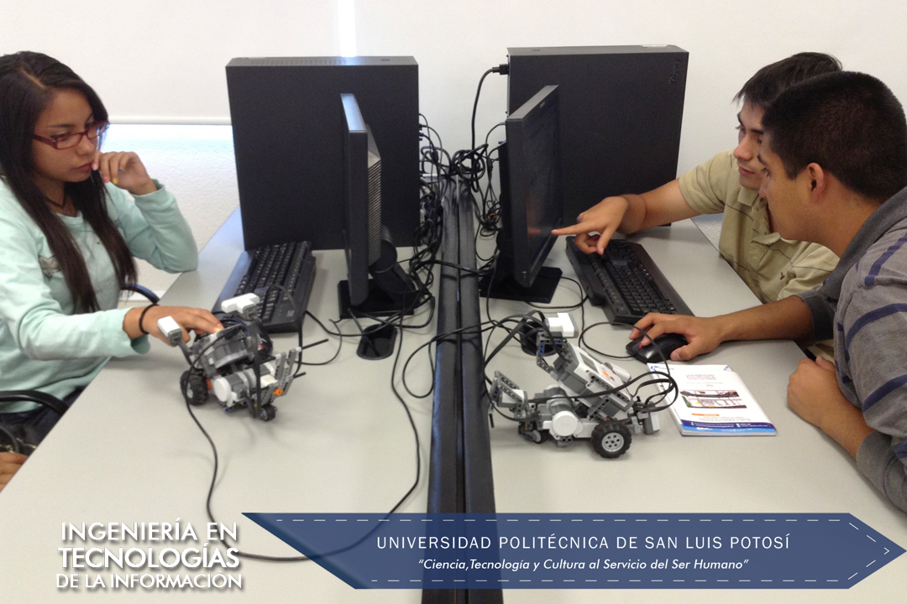
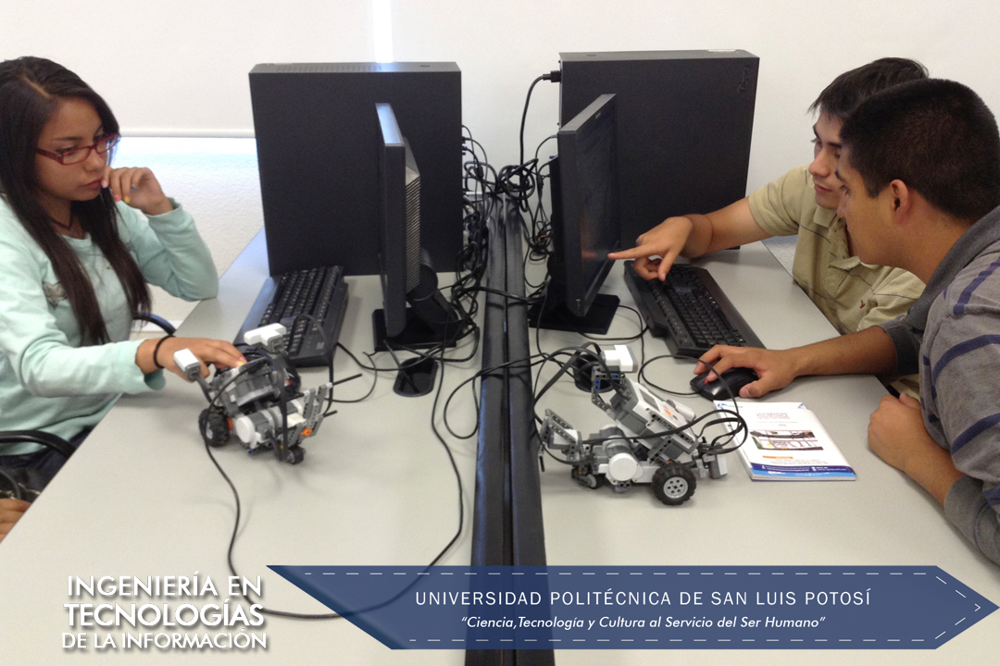

Descripción carrera: El Ingeniero en Tecnologías de la Información aplica sus sólidos conocimientos al diseño, desarrollo e instrumentación de soluciones informáticas que requieren las organizaciones, atendiendo las necesidades humanas derivadas de la interacción con la computadora. Es competente para mantener equipos de cómputo operando eficientemente y ofrece al usuario soluciones integrales a los problemas asociados con el área computacional.
Los Objetivos del Plan de Estudios de la Ingeniería en Tecnologías de la Información que ofrece la Universidad Politécnica de San Luis Potosí enfatizan siete aspectos importantes en la formación del Ingeniero, que le confieren una sólida preparación para desempeñarse exitosamente en el mundo laboral:
Al finalizar los alumnos de Ingeniería en Tecnologías de la Información deben realizar una residencia profesional de 480 horas, donde ponen en práctica lo que se aprendió en las aulas; aunque en muchas de las materias de Ingeniería en Tecnologías de la Información se deben realizar proyectos finales de aplicación en la industria y la investigación que permitan un acercamiento vivencial temprano en su carrera.
Los alumnos de Ingeniería en Tecnologías de la Información pueden ser miembros del club de robótica en el cual los estudiantes podrán aplicar sus conocimientos de matemáticas, física, programación de computadoras, habilidades como análisis, lógica y capacidad de abstracción para elaborar rutinas sofisticadas que generen movimientos en los robots LEGO.
“El Programa Educativo de la carrera de Ingeniería en Tecnologías de la Información está comprometido con la excelencia en la formación integral y humana, y con el aprendizaje, el desarrollo y aplicación del conocimiento en los campos de desarrollo e implementación de software, ofreciendo una solución integral a los problemas asociados con el área computacional. Está comprometido con la sociedad para mantener una oferta educativa pertinente en el área y desarrollar investigación aplicada involucrando alumnos en la solución de problemas tecnológicos de la sociedad.”
ProPE 2016-2017
El PE de Ingeniería en Tecnologías de la Información entregarán a la sociedad alumnos formados con los más altos estándares profesionales.
Los estudiantes de la carrera de Ingeniería en Tecnologías de la Información cuentan con acceso a la siguiente infraestructura:
Servicios Informáticos: Internet, Internet 2, Videoconferencia, Almacenamiento Digital, Plataforma de e-learning (Blackboard), VoIP.


Mejor Academia a nivel Latinoamérica que promueve la certificación, el programa Cisco Networking Academy Program y que forma nuevos estudiantes en el área de TI
3 medallas a estudiantes ejemplares otorgadas por la asociación Trayectoria de Éxito.
1er, 6º, 5º lugar concurso Netriders México, 2009, 2011 y 2013.
1er lugar expo ciencias otorgada por la Red Nacional de Actividades Juveniles en Ciencia y Tecnología, 2012 y 2013.
5º y 6º lugar en el Torneo Mexicano de Robótica, 2016.
150+ Certificaciones CCNA y CCENT como Academia CCNA
480+ Certificaciones JAVA y Solaris como Academia Oracle.
Proyecto Azios: Leyendas Potosinas (2018-2019): Estudiantes del noveno semestre de los Programas Educativos de Ingeniería en Tecnologías de la Información (ITI), Ingeniería en Telemática (ITEM) y Licenciatura en Mercadotecnia Internacional (LMI), de la Universidad Politécnica de San Luis Potosí (UPSLP), y liderados por el profesor Víctor Manuel Fernández Mireles, desarrollaron un videojuego utilizando realidad virtual en el que se adaptan algunas leyendas potosinas. En la implementación del videojuego se adaptó la leyenda “La bruja huachichil del Barrio de Tlaxcala”. En este videojuego, se rescatan algunas leyendas potosinas y elementos históricos del viejo San Luis de forma innovadora utilizando realidad virtual. Este trabajo se presentó en el Concurso Nacional de Videojuegos MX en la categoría “Universitarios” en la cual se recibieron 264 proyectos de los cuales ocho obtuvieron algún reconocimiento. El videojuego presentado por la Universidad recibió el premio al “Mejor Juego Cultural-Educativo».
Proyecto XTOR (2015-2019): Estudiantes del PE liderados por el profesor Rafael Llamas Contreras a través del grupo de trabajo de Cyberseguridad y en colaboración con la Secretaría de Seguridad Pública del Estado de San Luis Potosí, desarrollaron una aplicación llamada XTOR. Esta aplicación bloquea las llamadas entrantes al celular si es que coincide con algún número que fue reportado como un número del que se han hecho llamadas para extorsionar. La base de datos en la que se consultan los números reportados se actualiza de manera regular por la Secretaría de Seguridad Pública del Estado de San Luis Potosí. Esta aplicación se desarrolló para el sistema operativo Android y actualmente se encuentra disponible de forma gratuita desde “Play Store”.
Proyecto GIGI (2017) : Como parte de las actividades de divulgación de la ciencia en la institución, estudiantes del PE crearon un robot utilizando diversos objetos de uso cotidiano. Dada la temática de la Semana de la Ciencia en la que se participó, el robot reproducía frases orientadas al cuidado del agua. Este robot fue bautizado bajo el nombre de GIGI y se presentó en la Semana de la Ciencia. El objetivo fue mostrar a los niños lo que pueden ser capaces de hacer en carreras del área de las ingenierías, así mismo, como se puede contribuir a mantener la naturaleza. Este robot en su primera versión fue programado para compartir frases simples y después a través de reconocimiento enseñar a los niños.
Club de Robótica : El Club de Robótica esta conformado por alumnos que tienen el gusto por la programación y la robótica. Ya han sido varias las generaciones que han participado en este club, dedicando horas extras e independientes a sus materias y laboratorios para la construcción de sus robots y para participar en la competencia de cierre. Los miembros de este club pertenecen principalmente a estudiantes de los primeros semestres, quienes son lidereados por compañeros estudiantes de semestres más avanzados. Este tipo de actividades fortalece las habilidades de compañerismo, competencia, investigación, autoaprendizaje, pero sobre todo el saber que aún se tiene un gran camino por recorrer como estudiantes del PE de ITI, y sobre todo se preparan para competencias más avanzadas, como el Torneo Mexicano de Robótica, quienes participan en este torneo son los mejores de cada una de las competencias de cierre y participan cada año.
Proyecto ADA : Como una iniciativa gubernamental, la Institución, en conjunto con la Academia y estudiantes y egresadas mujeres de la carrera de ITI, buscan fortalecer el gusto por las profesiones en ingeniería a estudiantes que actualmente se encuentran en formación en las secundarias del estado, participan con la impartición de pláticas y talleres de manera gratuita fortaleciendo el futuro de las profesiones en el país.
Proyecto Semana de la Ciencia: PEPA PIG (2017): Juego de Realidad Virtual y Realidad Aumentada, creado con la intención de divulgar la ciencia motivando a los estudiantes visitantes dentro del rango de edades de 5 a 10 años a buscar el cuidado del agua. Este juego fué desarrollado por estudiantes del programa Educativo de ITI.
2013, Reconocimiento por haber concluido al menos 12 años en el programa Cisco Networking Academy Program.
Única Universidad a nivel nacional que mantiene los roles de Centro Docente, Centro de Soporte y Centro de Entrenamiento para la región centro de México; única Universidad a nivel Latinoamérica participando en el programa Girls Power Tech, Acceleration Program dentro del programa Cisco Networking Academy Program.


 

Dr. Omar Montaño Rivas – Profesor de Tiempo Completo
M.C. Víctor Manuel Fernández Mireles
M.C. Rafael Llamas Contreras - Profesor de Tiempo Completo
MTI Liliana Gámez Zavala
Dr. Francisco Cruz Ordaz Salazar
El Ingeniero en Tecnologías de la Información tiene los conocimientos necesarios de software y hardware en interacción con el factor humano, para ofrecer una solución integral a los problemas asociados con el área computacional.
Coordinación de Ingeniería en Tecnologías de la Información
Karina Hernández Leyva
Asistente de Ingeniería en Tecnologías de la Información
Teléfono: (444) 870 – 21 – 00 Ext. 223
Dr. Juan Antonio Cabrera
Coordinador de Ing. en Tecnologías de la Información
Email: iti@upslp.edu.mx